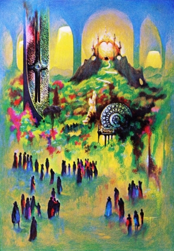

The Seer
by
Anne M. Stickel
Tongiv is dying. He has requested to be carried into the garden. Near him lie his writing instrument and tablet. Resting briefly upon him before the long flight home, his butterfly soul readies its wings. Yet he begins a new poem with its title and first line one and the same, as is his habit.
We meet in the walled garden,
Eternal night surrounds us, the last of the true humans and the end product of eons. We are sure he will write of this. Tongiv is the pure distillation of all that is best and finest in us. Although he can barely lift the stylus, he feebly waves away our help, and continues in a forgotten tongue.
Oh, Alubma-eh-odnai,
He pauses. I bend over him, sure that his breath has stilled, as has his hand. But a sigh escapes him, and he resumes the verses.
When the cricket calls
Through glowing darkness
Daring to speak of our hidden beginnings, his words follow, beautiful but without meaning to the survivors of the Redoubt's fall. The records have been lost to all save Tongiv. He has never told us all he knows or how he knows it.
Lighted by moon and stars
And all those mysteries
That walk not in straight lines,
Ah, having addressed the Unknown and the Night Land's abominations, his soul will traverse their terrain without being hindered on its way.
Revealed as if yet alive
Reflected in the pond
Shining among the lilies
And revived by love,
Eyes closed, Tongiv sees the self within the self and in what form he may return to us. He comforts us with barely legible lines. We weep as he writes.
Your face, a soft white moth,
Your hair, a black moth's wings,
Your hand, fallen rose petals
Perfuming the silent paths
Of our hope's last refuge.
I pick up the stylus released from Tongiv's open hand to finish for him.
Moving to the dance of water,
The rhythm of the breeze,
The incense of the moment,
We walk this garden together,
Walled within one another,
Imparting, and part of, the light.
Tongiv the Seer
The pipes wail. Bees are brought. We begin our mourning. Each disciple pours honey onto Tongiv. The bees cover his remains, complete his sweetness.
Among the people, disagreements are forgotten. Various factions cease their discord, because we all mourn as one. Even as we Eleven bear his body slowly through the settlement, I hear my name murmured amidst the weeping throng. They stand in straight lines.
"Speak of him to us, Urth."
"Take up the mantle of our fallen father."
"Give us your blessing, Urth!"
At the gates to the Outer Darkness, I pause to bless them, but do not speak. I accompany Tongiv's body toward the Night Land. Leading ten others to the edge of the Safe Zone, I help them lay the Seer upon the ledge, and wait for enlightenment. We watch the bees for a sign.
The bees rise and hover. They form the shape of Tongiv. His likeness raises a hand to point. Will it be out into certain death? Or will I be sent back to the people?
© 2003 by Anne M. Stickel.
Image copyright by Stephen Fabian.